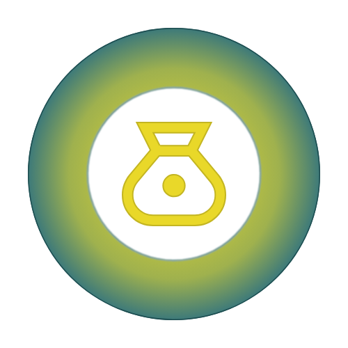

Suivre les transactions
Ajoutez un nom, un montant, une date et une note. Marquez une transaction comme réglée quand le moment est venu.

DueTrackSimple • local • maîtrisé
DueTrack est une application conçue pour suivre ce que vous devez et ce qu'on vous doit, sans compte obligatoire et sans complexité.
Le mode local fonctionne sans connexion. Vos données restent sur votre appareil.
Tout au même endroit
Du prêt entre proches aux dépenses partagées, DueTrack reste lisible et sous votre contrôle.
Ajoutez un nom, un montant, une date et une note. Marquez une transaction comme réglée quand le moment est venu.
Un résumé global et des statistiques par personne pour comprendre rapidement la situation.
Ajoutez des photos comme référence selon les possibilités de votre appareil.
Les profils locaux et les transactions restent disponibles sans compte ni réseau.
Conservez une copie JSON ou un export protégé par mot de passe. Vous décidez où le fichier est enregistré.
Langue, mode sombre, couleur d’interface et devise : l’outil s’adapte à vos habitudes.
Transparence & Sécurité
Découvrez comment DueTrack protège vos données et quelles sont les règles d'utilisation.
Les termes régissant l'utilisation de DueTrack. Lisez-les pour comprendre vos droits et obligations.
Lire les conditionsComment nous protégeons vos données. Votre vie privée est notre priorité absolue.
Lire la politiqueVotre espace, vos choix
DueTrack ne nécessite pas de compte pour commencer. Une synchronisation Supabase personnelle peut être configurée volontairement.
Vos données vous appartiennent. Chaque service en ligne implique un transfert de données : l’application vous l'explique avant toute activation.